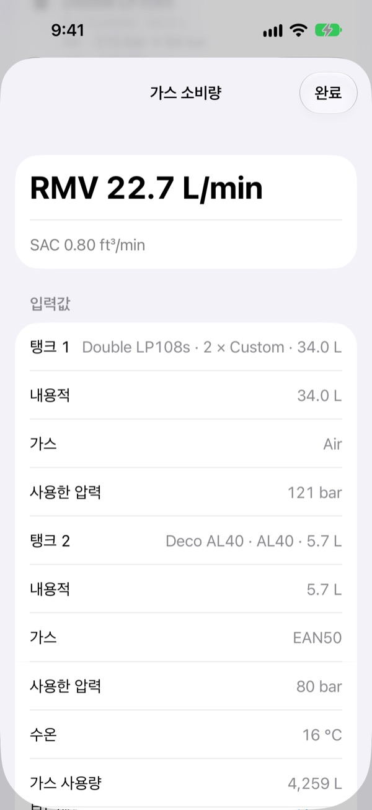
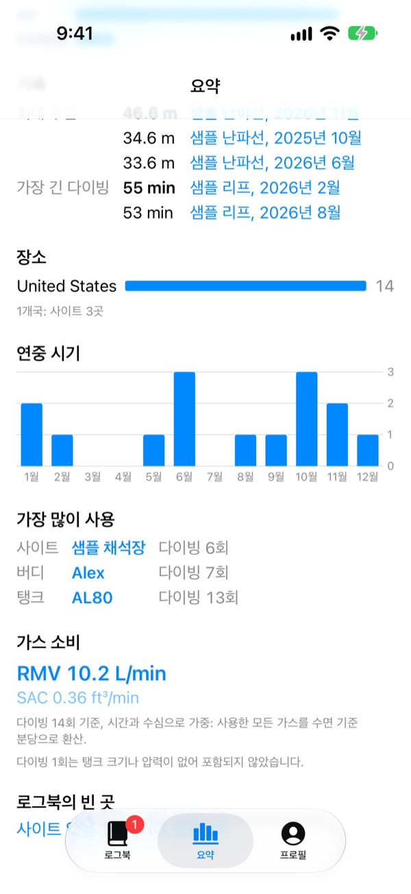

먼저 모든 기기를 업데이트하세요
모든 기기에서 최신 빌드를 실행하면 많은 문제가 사라집니다. 사용하는 각 iPhone, iPad, Mac에서 TestFlight를 열고 업데이트를 설치하세요. 이전 빌드는 업데이트할 때까지 변경 사항 전송을 멈추고 계속 동기화하려면 Thermocline을 업데이트하세요라고 표시합니다. 변경 사항은 보관되며 업데이트 후 전송됩니다.
다이브 컴퓨터에서 다운로드
컴퓨터를 찾을 수 없습니다
- 컴퓨터를 깨우고 Bluetooth 모드로 두세요(Shearwater: Menu → Bluetooth). 약 2분 동안만 그 상태로 유지됩니다.
- iPhone, iPad 또는 Mac 가까이에 두세요.
- Shearwater 컴퓨터는 마지막으로 사용한 기기로 다시 연결됩니다. 휴대폰이나 다른 Mac이 근처에 있다면 그 기기의 Bluetooth를 끈 다음 다시 시도하세요.
- Bluetooth가 켜져 있는지, Thermocline이 Bluetooth를 사용하도록 허용되어 있는지 확인하세요(iPhone: 설정 → Thermocline, Mac: 시스템 설정 → 개인정보 보호 및 보안 → Bluetooth).
Predator 또는 Petrel 1인데 iPhone에서 보이지 않습니다
이 모델은 iPhone과 iPad가 사용할 수 없는 구형 Bluetooth(Bluetooth Classic)를 사용합니다. Mac에서 다운로드하거나(가이드 참고), Shearwater Cloud나 UDDF 파일에서 다이빙을 가져오세요.
연결은 되는데 PIN을 요구합니다
컴퓨터 화면에 표시된 코드를 입력하세요. 처음에만 필요합니다.
"새 다이빙 없음"
마지막 다운로드 이후의 다이빙만 가져옵니다. 다이빙을 삭제했는데 되살리고 싶다면 컴퓨터의 모든 다이빙 다운로드를 켜고 다시 다운로드하세요. 이미 로그북에 있는 다이빙은 건너뜁니다.
다운로드가 중간에 멈췄습니다
유지를 선택해 도착한 다이빙을 저장한 다음, 나머지를 다시 다운로드하세요. 계속 멈추면 컴퓨터 가까이에서 다시 시도를 선택하고 다운로드 로그를 보내 주세요.
Mac에서 케이블 다운로드가 실패합니다
- 포트가 케이블과 맞는지 확인하세요: 목록에 각 포트의 종류가 표시되며, 선택한 모델에 맞지 않으면 경고합니다.
- 케이블을 뽑았다가 다시 꽂은 다음 새로 고침 버튼으로 케이블을 다시 찾으세요.
- 모델에 맞는 시작하기 전에 단계를 따르세요.
- 케이블 다운로드는 새로운 기능입니다. 결과와 상관없이 다운로드 로그를 보내 주세요.
기기 간 동기화
iPhone 앱에 Thermocline이 이제 하나의 앱이라고 표시되거나, Thermocline 앱이 두 개 보입니다
2026년 11월 18일에 iPhone, iPad, Mac, Apple Watch 앱이 베타 링크 하나로 이용하는 하나의 앱이 되었습니다. 이전에 쓰던 iPhone 앱은 이제 옮기는 것만 도와줍니다.
- 기존 앱을 여세요. 동기화가 꺼져 있다고 나오면 'iCloud와 동기화' 켜기를 탭하고 1분 동안 열어 두거나, 로그북을 UDDF로 내보내기를 탭하고 파일을 저장하세요.
- 새 베타 참여를 탭하거나 iPhone에서 베타 링크를 열고 새 앱을 설치하세요. 새 앱은 기존 앱 옆에 설치됩니다.
- 새 앱에서 프로필 → iCloud와 동기화를 켜세요. 다이빙, 사이트, 장비, 설정이 돌아옵니다. 대신 내보내기를 했다면 프로필 → 로그북 파일 가져오기를 사용하세요.
- 다이브 컴퓨터를 다시 페어링하고, iPhone의 Watch 앱에서 Watch 앱을 다시 설치해야 할 수 있습니다.
- 새 앱에 같은 다이빙이 보이면 기존 앱을 삭제하세요.
Mac에서는 아무것도 바뀌지 않습니다: 평소처럼 Mac 앱을 계속 업데이트하세요.
동기화 후 다이빙이 사라지거나 중복되었습니다
- 아직 아무것도 바꾸지 마세요. 각 기기에서 동기화 섹션(iPhone: 프로필 → 동기화, Mac: Thermocline → 설정 → 동기화)의 스크린샷을 찍어 보내 주세요.
- 모든 기기가 최신 빌드인지 확인하세요.
- 프로필 → 내 데이터 → 복원 지점으로 로그북을 가져오기, 병합 또는 삭제 이전으로 되돌릴 수 있습니다. 복원하면 먼저 현재 로그북을 저장하므로 되돌릴 수 있습니다.
한 기기에서 한 변경이 다른 기기에 보이지 않습니다
- 두 기기 모두 iCloud와 동기화가 켜져 있고 같은 Apple 계정에 로그인되어 있는지 확인하세요.
- 변경한 기기에서 전송 대기 중을 확인하고, 신호가 있는 곳에서 두 기기 모두 앱을 여세요. 동기화 섹션에 이 기기와 다른 기기가 일치하는지 표시됩니다.
- 지금 동기화를 누르세요.
"iCloud에 로그인되어 있지 않습니다"
기기의 설정에서 iCloud에 로그인하세요. 그때까지 로그북은 그 기기에 안전하게 남아 있으며, 로그인하면 동기화됩니다.
"iCloud 저장 공간이 가득 찼습니다"
로그북은 기기에 안전하게 있으며 공간이 생기면 동기화됩니다. iCloud 공간을 확보하거나 다이빙 사진의 iCloud 저장 공간 절약을 켜서 사진이 두 번 저장되지 않게 하세요.
"다른 기기에서 최신 버전을 사용하고 있습니다"
TestFlight에서 이 기기의 Thermocline을 업데이트하세요. 이 기기의 변경 사항은 안전하게 보관되며 업데이트 후 전송됩니다.
가져오기
일부 다이빙이나 세부 정보가 들어오지 않았습니다
가져오기 보고서에 가져오지 않음과 확인하세요 아래로 모든 항목이 이유와 함께 나열됩니다. 로그북마다 UDDF를 조금씩 다르게 쓰므로 값이 빠지는 것은 정상이며 빈칸으로 남습니다. 기대한 내용이 빠져 있다면 보고서와, 가능하면 파일도 보내 주세요.
MacDive의 장비, 사진, 다이빙 유형이 없습니다
MacDive의 UDDF 내보내기에는 이런 항목이 빠져 있습니다. 장비, 태그, 다이빙 유형은 그 위에 XML을 가져오고, 사진은 Mac에서 MacDive 폴더를 가져오세요. 이미 로그북에 있는 다이빙은 두 번 추가되지 않습니다. 어떤 MacDive 파일을 사용할까를 참고하세요.
MacDive에서 가져온 다이빙에 NDL, ppO₂ 또는 CNS가 없습니다
다이빙 페이지에 NDL이 "—", 감압이 "기록 없음"으로 표시되거나, ppO₂에 "가스와 수심으로 계산함"이라고 나옵니다. MacDive의 UDDF 내보내기에는 컴퓨터의 NDL, ppO₂, CNS가 들어 있지 않습니다. MacDive 폴더에는 MacDive가 iPhone이나 iPad에서 다운로드한 다이빙의 프로파일이 없습니다. 그런 다이빙은 암호화하여 저장하기 때문입니다.
MacDive의 XML도 가져오세요: 다이빙을 다시 추가하지 않고 빠진 것을 채웁니다. 어떤 MacDive 파일을 사용할까를 참고하세요.
파일이나 앱을 옮기면 무언가 잃게 되나요?
- 원본 파일은 절대 변경되지 않습니다. MacDive에서 내보낸 파일을 보관하고, 다이빙 몇 개를 비교해 볼 때까지 MacDive 자체도 남겨 두세요.
- 두 번째 가져오기는 추가할 뿐 대체하지 않습니다. 이미 로그북에 있는 다이빙은 대응되어 빠진 것만 채워지므로, UDDF 다음에 XML을, 또는 둘 중 어느 것 다음에든 폴더를 가져올 수 있습니다.
- 되돌릴 수 있습니다. 다이빙이 두 개 이상인 가져오기 전에는 가져오기 전이라는 복원 지점이 저장됩니다(iPhone에서는 프로필 → 내 데이터 → 복원 지점, Mac에서는 설정 → 복원 지점). Mac에서는 보고서의 가져오기 취소…로도 되돌릴 수 있습니다.
- Thermocline을 떠날 때: UDDF 내보내기가 완전한 형식입니다. 각 다이빙 중 컴퓨터의 NDL, ppO₂, CNS와 장비, 태그, 다이빙 유형, 동영상 링크가 포함됩니다. 사진은 어떤 내보내기 파일에도 들어가지 않습니다.
가져온 다이빙에 가스가 없습니다
파일에 어떤 가스를 사용했는지 나와 있지 않았습니다. 그런 다이빙은 확인 필요에서 기다리므로 가스를 설정할 수 있습니다.
잘못된 파일을 가져왔습니다
Mac에서는 가져오기 보고서의 가져오기 취소…를 사용하세요. 어느 기기에서든 다이빙이 두 개 이상인 가져오기 전에는 가져오기 전이라는 복원 지점이 저장됩니다.
Garmin 파일을 가져올 수 없습니다
- "zip 파일입니다": Garmin Connect의 원본 내보내기은 .zip 파일을 줍니다. 압축을 푼 다음 안에 있는 .fit 파일을 선택하세요.
- "Garmin FIT 파일이 아닙니다": Garmin 워치에서 나온 파일이 아니거나, 이름만 .fit으로 끝나는 파일입니다. 워치의 GARMIN → Activity 폴더에 있는 파일이나 원본 내보내기 파일을 사용하세요.
- "Garmin 파일에 다이빙이 없습니다": 달리기, 걷기, 설정, 건강 파일은 건너뜁니다. 다이빙만 들어옵니다.
- "잘렸거나 손상된 것 같습니다": 파일이 중간에 끊겼습니다. 복사나 다운로드가 끝나지 않은 경우가 많습니다. 읽을 수 있었던 내용은 표시됩니다. 나머지를 가져오려면 워치에서 파일을 다시 복사해 다시 가져오세요. 이미 로그북에 있는 다이빙은 건너뜁니다.
- Garmin 파일과 다른 로그북 파일을 함께 선택하는 것은 한 번에 할 수 없습니다: 로그북 파일을 가져온 다음 Garmin 파일을 가져오세요.
Garmin 다이빙이 탱크를 확인하라고 합니다
트랜스미터가 두 개 이상이면 Garmin 파일에는 각 트랜스미터가 어떤 가스에 달려 있었는지 나와 있지 않으므로, 다이빙의 탱크에 순서대로 대응시켰습니다. 다이빙의 가스 섹션을 열어 각 압력이 맞는 탱크에 있는지 확인하세요.
Garmin 다이빙의 시각이 한 시간 어긋납니다
시각은 워치의 시계에서 옵니다. 다이빙한 곳의 현지 시각으로 설정되어 있지 않았다면 다이빙이 워치의 시각으로 표시됩니다. 다이빙의 시각을 편집하거나, 다음 여행 전에 워치의 시간대를 설정하세요.
드리프트 다이빙의 사이트가 잘못되었습니다
다이빙은 입수한 곳과 출수한 곳 중 더 가까운 쪽에 대응되며, 드리프트에서는 보통 입수한 곳입니다. 잘못된 사이트에 대응되었거나 대응된 사이트가 없다면 다이빙에서 사이트를 선택하고, 지나간 다른 난파선은 메모에 추가하세요.
가스 사용량과 SAC
SAC 수치가 이상해 보입니다
옆에 있는 계산 방법을 탭하거나 클릭하세요. 모든 입력값이 표시됩니다: 탱크와 내용적, 압력, 온도, 실제 기체 보정, 시간, 수심. 흔한 원인은 잘못된 탱크 크기이며, 장비에서 고치세요. 그래도 이상해 보이면 계산 방법 화면의 스크린샷을 보내 주세요.

SAC 대신 메시지만 보입니다
- SAC를 보려면 탱크 크기를 추가하세요: 탱크 모델을 선택하거나 크기를 입력하세요.
- SAC를 보려면 시작 압력과 종료 압력을 추가하세요: 트랜스미터가 없으므로 탱크에 직접 입력하세요.
- SAC에는 다이브 프로파일이 필요합니다: 프로파일 없이 직접 기록한 다이빙에는 SAC가 없습니다.
- 리브리더 다이빙에는 SAC 수치가 나오지 않습니다.
SAC가 탱크 하나만 계산합니다
가스를 여러 개 쓴 다이빙에서는 트랜스미터가 달린 탱크에만 압력이 있습니다. 다른 탱크에 시작 압력과 종료 압력을 입력하면 SAC가 모든 가스를 포함합니다.
요약의 가스 소비에 탱크 크기가 있는 다이빙이 없다고 나옵니다
가스 소비는 탱크 크기와 시작·종료 압력이 있는 다이빙만 평균합니다. MacDive의 UDDF에서 온 다이빙에는 탱크 크기가 없습니다. 크기가 내용적이 아니기 때문입니다. 그 위에 XML을 가져오면 채워집니다(어떤 MacDive 파일을 사용할까 참고). 그렇지 않으면 다이빙에 탱크를 설정하고(모델이나 장비 세트 선택) 가지고 있는 압력을 추가하세요. 가스 소비는 수치 아래에 계산에서 빠진 다이빙 수를 표시합니다.

사진
다른 기기에 사진이 보이지 않습니다
다이빙 사진의 iCloud 저장 공간 절약이 켜져 있으면, 다른 기기가 iCloud 사진에서 사진을 찾을 때까지 사진의 사본이 유지됩니다. 두 기기 모두 이 설정을 켜고, 두 기기 모두 iCloud 사진이 켜져 있는지 확인한 다음, 업로드될 때까지 시간을 두세요.
동영상이 추가되지 않았습니다
보관함의 동영상은 복사할 수 없고 연결만 할 수 있습니다. 동기화 → 다이빙 사진의 iCloud 저장 공간 절약을 켜고, 동영상이 iCloud 사진에 있는지 확인하세요. 또는 다이빙 사진 아래에 YouTube나 Vimeo 링크를 붙여 넣으세요.
"Thermocline이 사진을 읽을 수 없어…"
사진 접근이 거부되어 사진이 연결되지 않고 복사됩니다. 연결하려면 설정 → 개인정보 보호 및 보안 → 사진 → Thermocline에서 접근을 허용하세요.
사이트와 Apple Watch
제안된 사이트가 틀렸거나 없습니다
다른 사이트를 선택하거나, 내장 목록에서 이름으로 검색하거나, 위치를 직접 표시하거나 입력하세요. 내륙의 채석장과 호수는 공개 목록에 없는 경우가 많으므로, 그 뒤로는 제안에서 내 사이트가 먼저 나옵니다.
Apple Watch에 Thermocline이 없습니다
Watch 앱은 TestFlight의 iPhone 앱과 함께 설치됩니다. iPhone에서 Watch 앱을 열고 사용 가능한 앱에서 Thermocline을 찾아 설치를 탭하세요. watchOS 11 이상이 필요합니다. 기존 iPhone 앱에서 옮겨 왔다면 다시 설치하세요: 기존 Watch 앱은 기존 iPhone 앱에 속해 있습니다.
워치에 "양호한 측위를 기다리는 중"이라고 나오고 지점 표시가 회색으로 남아 있습니다
지점은 오차 ±30 m 이내, 30 초 이내의 측위로만 저장되므로 잘못된 위치가 로그북에 들어가는 일은 절대 없습니다. 워치를 물 밖에 두고 하늘이 트인 곳에서 수면에 머물며 1분 정도 기다리세요. 오래된 캐시 위치 무시 중은 새 위치를 기다리고 있다는 뜻입니다. GPS는 물속에서 작동하지 않습니다: 하강하기 전이나 수면에 올라왔을 때 지점을 표시하세요.
워치에 "Thermocline의 위치 접근이 꺼져 있습니다"라고 나옵니다
워치에서 설정 → 개인정보 보호 및 보안 → 위치 서비스를 열고, 위치 서비스를 켠 다음 Thermocline을 앱을 사용하는 동안 허용하세요.
Watch에서 표시한 지점이 iPhone에 나타나지 않았습니다
워치에서 표시한 지점을 여세요. iPhone으로 보내기 대기 중은 iPhone이 아직 받지 못했다는 뜻입니다: 워치를 iPhone 가까이에 두고 iPhone에서 Thermocline을 여세요. iPhone으로 보냄은 iPhone에 있다는 뜻입니다: 로그북 → 확인 필요를 확인하세요. iPhone은 온라인일 때 지점을 검색하므로, 신호가 없으면 검색할 신호를 기다리는 중 상태로 기다립니다.
지점을 표시한 뒤 워치에 사이트 이름이 나오지 않았습니다
이름은 iPhone에서 옵니다: iPhone이 근처에 있고 Thermocline이 응답할 수 있으면, 워치가 지점 아래에 iPhone이 제안할 사이트(내 사이트 또는 다이브 사이트 목록의 사이트)를 거리와 함께 보여 줍니다. iPhone이 범위를 벗어나 있으면 워치는 iPhone이 남겨 둔 사본으로 내 사이트의 이름은 보여 주지만, 다이브 사이트 목록의 이름은 보여 주지 않습니다. 약 1.5 km 이내에 사이트가 없으면 지점은 이름 없이 표시됩니다. 어느 경우든 사이트는 iPhone의 로그북 → 확인 필요에서 선택합니다.
워치에서 말한 이름이 저장되지 않았습니다
이름은 받아쓰기나 키보드가 닫힐 때, 또는 뒤로 갈 때 저장됩니다. 표시한 지점을 열고 지점을 탭해 이름을 확인하세요. 다시 하려면 이름 변경을 탭하세요. 지점이 이미 전송되었다면 이름도 iPhone으로 따라갑니다.
워치가 다이빙을 기록하나요?
아니요. Thermocline Watch 앱은 수면에서 지점만 표시합니다. 다이빙은 다이브 컴퓨터에서 옵니다. Garmin Descent 워치는 .fit 파일을 가져오세요: 가이드의 Garmin Descent를 참고하세요.
워치에서 지점이 사라졌습니다
정상입니다. 지점은 iPhone에서 확인하거나 버리면 워치에서 사라집니다. 확인된 지점은 로그북의 사이트가 되어 다른 기기와 동기화됩니다.
보고서나 다운로드 로그 보내기
- 앱에서: 스크린샷을 찍은 다음 TestFlight의 베타 피드백 공유를 사용하세요. 빌드와 기기 정보가 첨부되어 도착합니다.
- 다운로드 로그, iPhone: 다운로드 화면에서 다운로드 로그를 탭한 다음 공유하세요. Bluetooth와 컴퓨터 메시지만 담겨 있으며, 다이빙 데이터는 없습니다.
- 다운로드 로그, Mac: 다운로드 창에서 다운로드 로그…를 선택한 다음 로그 저장…을 선택하고 파일을 첨부하세요.
- 이메일: brian@616labs.net으로 기기, 빌드 번호(TestFlight에 표시됨), 기대한 결과를 함께 보내 주세요.